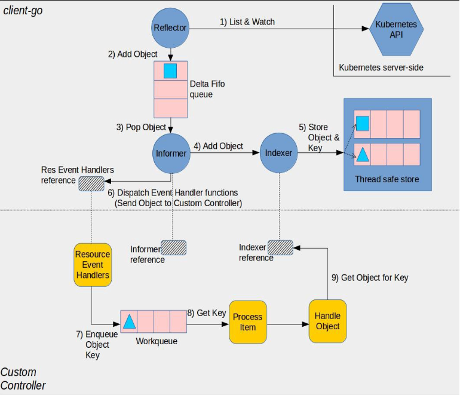

kubernetes源码分析之informer(上篇)
因为工作的原因，一直想好好阅读kubernetes的源码，看看这么强大的系统的内部机制，学习大神的优秀架构和优雅代码。
client-go在k8s中被广泛应用，kubernetes内部组件之间的通信，大部份依赖client-go中的list-watch机制。所以就先从clinet-go开始学习吧。
本文基于k8s v1.18.6版本，其中涉及到的主要代码大部分在client-go的tool/cache中。
概述
Infomer是client-go中的核心模块，通过它，所有的客户端实现了List-Watch方式监听apiserver中的资源。它的架构流程如下所示：

-
Reflector: Reflector定义在
cache包中(tools/cache/reflector.go)，它的作用是向apiserverwatch 特定的资源类型。这个功能通过其绑定的 List-Watch方法实现。Watch的资源可以是in-build的资源也可以是custom的资源。每次Reflector启动时，会对apiserver执行特定资源的list操作，而后通过watch机制，“观察"apiserver中的资源对象。当对象实例发生变更时，将变更"放进” Delta Fifo 队列。这个步骤在 watchHandler 函数(tools/cache/reflector.go)中完成。 -
Informer： 一个定义在
cache包中的基础controller(tools/cache/controller.go)。从 Delta FIFO 队列中pop资源对象实例(这个功能在 processLoop 中实现(tools/cache/controller.go)。这个 base controller做的工作是保存这个对象用于后续检索处理用的，然后触发我们自己的控制器来处理这个对象。 -
Indexer: Indexer 提供的是 objects 之上的检索能力。Indexer 也定义在
cache包中(tools/cache/index.go)。一个典型的检索使用方式是基于一个对象的 labels 创建索引。Indexer使用一个线程安全的store来存储对象和其对应的key。还有一个默认函数MetaNamespaceKeyFunc(tools/cache/store.go) 可以生成对象的 key，类似 / 格式来关联对应的对象。 -
Informer reference: 这是一个知道如何处理自定义资源对象的 Informer 实例的引用。自定义控制器需要创建合适的 Informer.
-
Indexer reference: 这是一个知道如何处理自定义资源对象的 Indexer 实例的引用. 自定义控制器代码需要创建这个引用对象，然后用于检索资源对象用于后续的处理。
-
Resource Event Handlers: 这是一个回调函数，在 Informer 想要分发一个对象给控制器的时候会调用这个函数。典型的用法是写一个函数来获取分发过来的对象的 key，将 key 放入队列中等待进一步的处理。
-
Work queue: 这个队列是在自己的控制器代码中创建的，用来解耦一个对象的分发和处理过程。Resource event handler 函数会被写成提取分发来的对象的 key，然后将这个 key 添加到 work queue 里面。
-
Process Item 这是我们在自己代码中实现的用来处理 work queue 中拿到的 items 的函数。这里可以有一个或多个函数来处理具体的过程，这个函数的典型用法是使用 Indexer 索引或者一个 Listing wrapper 来根据相应的 key 检索对象。
reflector
Reflector通过list-watch监听特定的资源，然后将变化写入DeltaFIFO中。
定义
type Reflector struct {
name string
// 在DeltaFIFO保存的对象类型，常常是对象的expectedGVK字段值，或者expectedType值。
expectedTypeName string
expectedType reflect.Type
expectedGVK *schema.GroupVersionKind
// 存储对象
store Store
listerWatcher ListerWatcher
// 重试机制
backoffManager wait.BackoffManager
// 每过一段时间，清空本地缓存，重新执行list，这样可以避免list&watch机制错误导致业务逻辑错误
resyncPeriod time.Duration
// 定义是否执行resync操作的方法
ShouldResync func() bool
// clock allows tests to manipulate time
clock clock.Clock
// 是否采用分页（降低服务器压力）
paginatedResult bool
// 最后一次同步获得的resource version值
lastSyncResourceVersion string
isLastSyncResourceVersionUnavailable bool
// 对lastSyncResourceVersion读写操作时使用的读写锁
lastSyncResourceVersionMutex sync.RWMutex
// Watch&List时使用的分页大小
WatchListPageSize int64
}
需要特别指出的是，在reflector结构体中，给了一个backoffManager字段，用于定义发生断联时的避免服务雪崩效应而采用的重试指数退避算法。
func NewNamedReflector(name string, lw ListerWatcher, expectedType interface{}, store Store, resyncPeriod time.Duration) *Reflector {
realClock := &clock.RealClock{}
r := &Reflector{
name: name,
listerWatcher: lw,
store: store,
// We used to make the call every 1sec (1 QPS), the goal here is to achieve ~98% traffic reduction when
// API server is not healthy. With these parameters, backoff will stop at [30,60) sec interval which is
// 0.22 QPS. If we don't backoff for 2min, assume API server is healthy and we reset the backoff.
backoffManager: wait.NewExponentialBackoffManager(800*time.Millisecond, 30*time.Second, 2*time.Minute, 2.0, 1.0, realClock),
resyncPeriod: resyncPeriod,
clock: realClock,
}
r.setExpectedType(expectedType)
return r
}
在新建一个reflector对象的时候，backoffManager被设置成第一次为800ms间隔，如果访问失败，则访问间隔时间会加倍，并且加上一个随机值Jitter(避免服务同时刻执行重试)。同时，最大的间隔时间被设置成30秒，当超过2分钟还未响应时，会再次初始化backoffManger(初始间隔再次回到800ms)。感兴趣的同学可以自行查看这块代码实现(k8s.io/apimachinery/pkg/util/wait/wait.go)，这边就不再展开讲了。
List&Watch
在每一次启动时，reflector对象都会与apiserver建立http短链接，然后调用list方法，获取所有待观察对象的信息，并将resourceVersion值置为0；之后，再与apiserver建立长连接，每次对象实例发生变化时，server都将给reflector对象发生消息，“通知"实例变更。此后reflector将变更消息放置本地缓存Delta Fifo Queue中，待informer读取。List&Watch主要代码如下：
func (r *Reflector) ListAndWatch(stopCh <-chan struct{}) error {
var resourceVersion string
options := metav1.ListOptions{ResourceVersion: r.relistResourceVersion()}
if err := func() error {
var list runtime.Object
var err error
listCh := make(chan struct{}, 1)
panicCh := make(chan interface{}, 1)
go func() {
defer func() {
if r := recover(); r != nil {
panicCh <- r
}
}()
pager := pager.New(pager.SimplePageFunc(func(opts metav1.ListOptions) (runtime.Object, error) {
return r.listerWatcher.List(opts)
}))
// ...
list, paginatedResult, err = pager.List(context.Background(), options)
if isExpiredError(err) || isTooLargeResourceVersionError(err) {
r.setIsLastSyncResourceVersionUnavailable(true)
list, paginatedResult, err = pager.List(context.Background(), metav1.ListOptions{ResourceVersion: r.relistResourceVersion()})
}
close(listCh)
}()
select {
case <-stopCh:
return nil
case r := <-panicCh:
panic(r)
case <-listCh:
}
items, err := meta.ExtractList(list)
if err := r.syncWith(items, resourceVersion); err != nil {
return fmt.Errorf("%s: Unable to sync list result: %v", r.name, err)
}
// ...
return nil
}(); err != nil {
return err
}
resyncerrc := make(chan error, 1)
cancelCh := make(chan struct{})
defer close(cancelCh)
go func() {
resyncCh, cleanup := r.resyncChan()
defer func() {
cleanup() // Call the last one written into cleanup
}()
for {
select {
case <-resyncCh:
case <-stopCh:
return
case <-cancelCh:
return
}
if r.ShouldResync == nil || r.ShouldResync() {
if err := r.store.Resync(); err != nil {
resyncerrc <- err
return
}
}
cleanup()
resyncCh, cleanup = r.resyncChan()
}
}()
for {
select {
case <-stopCh:
return nil
default:
}
timeoutSeconds := int64(minWatchTimeout.Seconds() * (rand.Float64() + 1.0))
options = metav1.ListOptions{
ResourceVersion: resourceVersion,
TimeoutSeconds: &timeoutSeconds,
AllowWatchBookmarks: true,
}
start := r.clock.Now()
w, err := r.listerWatcher.Watch(options)
if err != nil {
switch {
case isExpiredError(err):
case err == io.EOF:
case err == io.ErrUnexpectedEOF:
default:
utilruntime.HandleError(fmt.Errorf("%s: Failed to watch %v: %v", r.name, r.expectedTypeName, err))
}
if utilnet.IsConnectionRefused(err) {
time.Sleep(time.Second)
continue
}
return nil
}
if err := r.watchHandler(start, w, &resourceVersion, resyncerrc, stopCh); err != nil {
if err != errorStopRequested {
// ...
}
return nil
}
}
}
代码稍微有点长，省略大部分细节的业务代码后，可以看到，ListAndWatch方法主要做的就是先调用list方法，将需观察的实例对象做一次List操作，更新至reflector的store，同时更新resourceVersion值。之后，在for循环内，一直执行watch操作。
在这里又有一个技巧：reflecor中的listerWatcher被定义成interface，只需实现两个方法：Lister和watcher，这样就有一个好处，对于不同的资源执行list和watch时，可以使用不同的方法，用户甚至可以使用自己定义的方法(后续会提到)。在执行List和Watch时，直接传入定义的方法，实现较为巧妙。
func (r *Reflector) watchHandler(start time.Time, w watch.Interface, resourceVersion *string, errc chan error, stopCh <-chan struct{}) error {
// ...
loop:
for {
select {
case <-stopCh:
return errorStopRequested
case err := <-errc:
return err
case event, ok := <-w.ResultChan():
// ...
newResourceVersion := meta.GetResourceVersion()
switch event.Type {
case watch.Added:
err := r.store.Add(event.Object)
if err != nil {
utilruntime.HandleError(fmt.Errorf("%s: unable to add watch event object (%#v) to store: %v", r.name, event.Object, err))
}
case watch.Modified:
err := r.store.Update(event.Object)
if err != nil {
utilruntime.HandleError(fmt.Errorf("%s: unable to update watch event object (%#v) to store: %v", r.name, event.Object, err))
}
case watch.Deleted:
err := r.store.Delete(event.Object)
if err != nil {
utilruntime.HandleError(fmt.Errorf("%s: unable to delete watch event object (%#v) from store: %v", r.name, event.Object, err))
}
case watch.Bookmark:
// A `Bookmark` means watch has synced here, just update the resourceVersion
default:
utilruntime.HandleError(fmt.Errorf("%s: unable to understand watch event %#v", r.name, event))
}
*resourceVersion = newResourceVersion
r.setLastSyncResourceVersion(newResourceVersion)
eventCount++
}
}
// ...
return nil
}
watchHandler逻辑很清晰，就是将watch到发生变化的资源对象更新到DeltaFIFO中。
Informer
在这里有一点容易引起误会：在上图中执行Pop Object和Add Object的对象在代码里是一个controller对象，同时，我们可以看到代码中还有一个Controller的interface。仔细看我们可以发现，controller是Controller的一个实例，它实现了Run，HasSynced和LastSyncResourceVersion方法。同时，在这里它也是informer对象的实例。
func (c *controller) Run(stopCh <-chan struct{}) {
defer utilruntime.HandleCrash()
go func() {
<-stopCh
c.config.Queue.Close()
}()
r := NewReflector(
c.config.ListerWatcher,
c.config.ObjectType,
c.config.Queue,
c.config.FullResyncPeriod,
)
r.ShouldResync = c.config.ShouldResync
r.clock = c.clock
c.reflectorMutex.Lock()
c.reflector = r
c.reflectorMutex.Unlock()
var wg wait.Group
defer wg.Wait()
wg.StartWithChannel(stopCh, r.Run)
wait.Until(c.processLoop, time.Second, stopCh)
}
最主要的方法就是Run，可以看到上面提到的reflector在这里被定义，同时，wg.StartWithChannel(stopCh, r.Run)执行ListAndWatch方法。
看一下processLoop方法的实现：
func (c *controller) processLoop() {
for {
obj, err := c.config.Queue.Pop(PopProcessFunc(c.config.Process))
if err != nil {
if err == ErrFIFOClosed {
return
}
if c.config.RetryOnError {
// This is the safe way to re-enqueue.
c.config.Queue.AddIfNotPresent(obj)
}
}
}
}
在看Pop方法具体实现之前，建议先看一下DeltaFIFO。有关DeltaFIFO的介绍，建议收看博客informer之delta_fifo，非常详细。需要指出的是，DeltaFIFO中只记录Dalta数据，表示obj的变化值，同时本地还有一份缓存 knownObjects。
func (f *DeltaFIFO) Pop(process PopProcessFunc) (interface{}, error) {
f.lock.Lock()
defer f.lock.Unlock()
for {
for len(f.queue) == 0 {
if f.IsClosed() {
return nil, ErrFIFOClosed
}
f.cond.Wait()
}
id := f.queue[0]
f.queue = f.queue[1:]
if f.initialPopulationCount > 0 {
f.initialPopulationCount--
}
item, ok := f.items[id]
if !ok {
// Item may have been deleted subsequently.
continue
}
delete(f.items, id)
err := process(item)
if e, ok := err.(ErrRequeue); ok {
f.addIfNotPresent(id, item)
err = e.Err
}
// Don't need to copyDeltas here, because we're transferring
// ownership to the caller.
return item, err
}
}
功能单一，将DeltaFIFO队列中的元素取出，完成自定义的process操作。有个小细节，当queue队列长度为0时，会通过cond执行等待，等到list执行Add,Update等操作后，通知继续往下。
接下来看一下process的实现：
Process:
func(obj interface{}) error {
// from oldest to newest
for _, d := range obj.(Deltas) {
switch d.Type {
case Sync, Replaced, Added, Updated:
if old, exists, err := clientState.Get(d.Object); err == nil && exists {
if err := clientState.Update(d.Object); err != nil {
return err
}
h.OnUpdate(old, d.Object)
} else {
if err := clientState.Add(d.Object); err != nil {
return err
}
h.OnAdd(d.Object)
}
case Deleted:
if err := clientState.Delete(d.Object); err != nil {
return err
}
h.OnDelete(d.Object)
}
}
return nil
}
执行Sync，Replaced, Added, Updated操作时，若发现store中不存在，则会自动创建，否则执行更新；执行Deleted操作时，则直接执行删除。在这里，Sync，Replaced都是在执行watch失败之后，执行重新执行list操作后，进行的缓存同步。但同时，sync也会根据定义informer是定义的同步刷新时间来定时执行刷新。大部分情况下，用户都定义为0(信任etcd的刷新机制)。
Indexer
上面执行对本地store的操作对象 clientState其实就是上面提到的indexer。
func NewIndexerInformer(
lw ListerWatcher,
objType runtime.Object,
resyncPeriod time.Duration,
h ResourceEventHandler,
indexers Indexers,
) (Indexer, Controller) {
// This will hold the client state, as we know it.
clientState := NewIndexer(DeletionHandlingMetaNamespaceKeyFunc, indexers)
return clientState, newInformer(lw, objType, resyncPeriod, h, clientState)
}
func NewIndexer(keyFunc KeyFunc, indexers Indexers) Indexer {
return &cache{
cacheStorage: NewThreadSafeStore(indexers, Indices{}),
keyFunc: keyFunc,
}
}
可以看到informer中对于store中存储的对象的操作都被定义在indexer里。Indexer其实是cache的一个实现。
在这里，threadSafeMap实现了ThreadSafeStore。
func NewThreadSafeStore(indexers Indexers, indices Indices) ThreadSafeStore {
return &threadSafeMap{
items: map[string]interface{}{},
indexers: indexers,
indices: indices,
}
}
type threadSafeMap struct {
lock sync.RWMutex
items map[string]interface{}
// indexers maps a name to an IndexFunc
indexers Indexers
// indices maps a name to an Index
indices Indices
}
顺便看一下，它的Add方法。
func (c *threadSafeMap) Add(key string, obj interface{}) {
c.lock.Lock()
defer c.lock.Unlock()
oldObject := c.items[key]
c.items[key] = obj
c.updateIndices(oldObject, obj, key)
}
func (c *threadSafeMap) updateIndices(oldObj interface{}, newObj interface{}, key string) {
// if we got an old object, we need to remove it before we add it again
if oldObj != nil {
c.deleteFromIndices(oldObj, key)
}
for name, indexFunc := range c.indexers {
indexValues, err := indexFunc(newObj)
if err != nil {
panic(fmt.Errorf("unable to calculate an index entry for key %q on index %q: %v", key, name, err))
}
index := c.indices[name]
if index == nil {
index = Index{}
c.indices[name] = index
}
for _, indexValue := range indexValues {
set := index[indexValue]
if set == nil {
set = sets.String{}
index[indexValue] = set
}
set.Insert(key)
}
}
}
代码很眼熟，没错，threadSafeMap就是另一种形式的reflector。